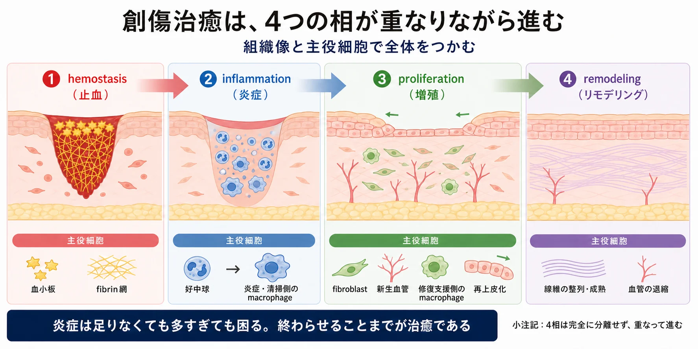
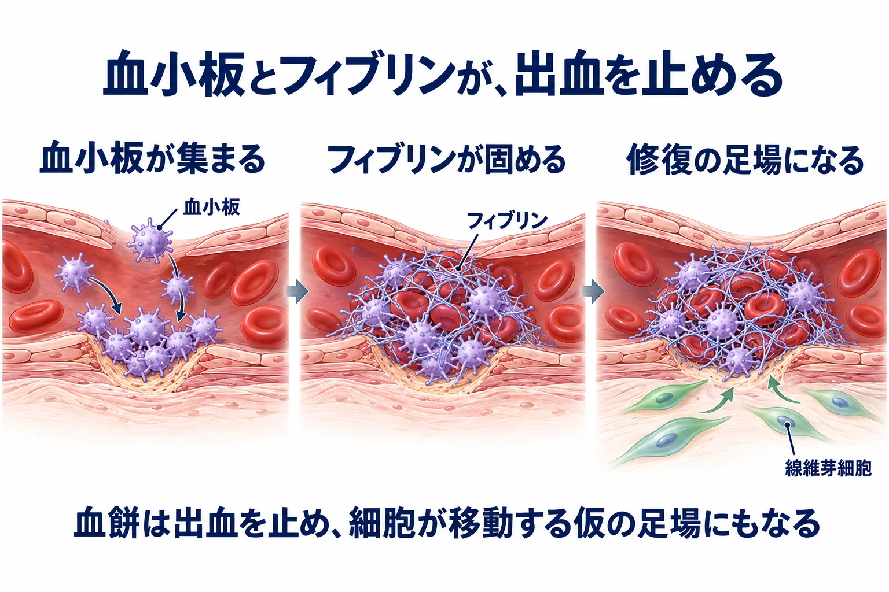
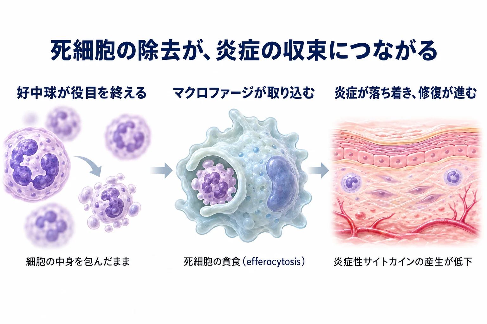
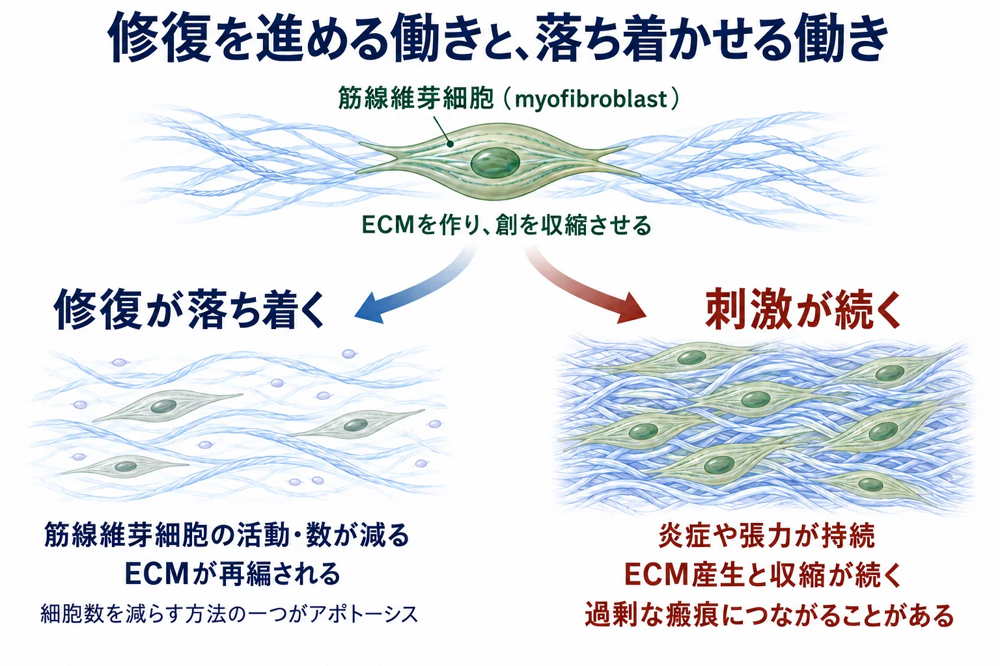
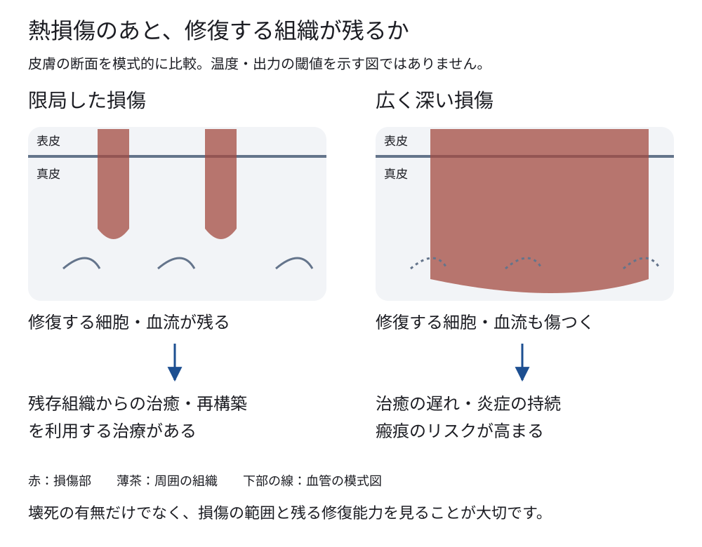
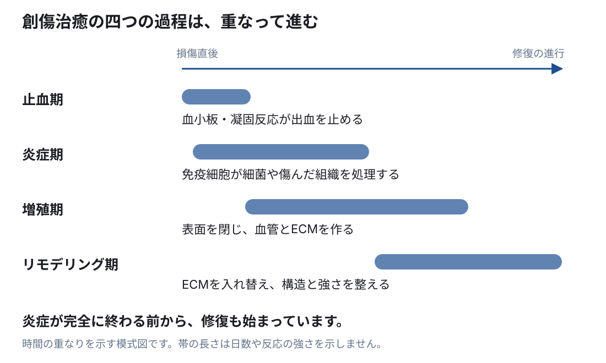

生化学・細胞生物学の基礎 ／ 傷害から修復まで
炎症と創傷治癒
公開 2026-09-14
美容医療では、皮膚に刺激や小さな傷を与え、その後の炎症と創傷治癒（傷ついた組織を修復する反応）を利用して、肌の質感やハリの改善を目指します。
しかし、損傷が強すぎたり炎症が長引いたりすると、肥厚性瘢痕・ケロイドや、炎症後色素沈着などのトラブルにつながります。
私たちは、傷を作り、その治り方を治療に利用しています。だからこそ、炎症がどう始まり、どう収まり、皮膚がどう修復されるのかを理解しておく必要があります。
この章の一言
傷ついた皮膚では、免疫細胞が細菌や死んだ細胞を取り除き、残った表皮細胞や線維芽細胞が組織を修復します。
修復の結果は、損傷の程度と、修復を担う細胞・血流がどれだけ残るかで変わります。 collagenが増えて傷を埋めても、損傷前と同じ構造に戻るとは限りません。
1 止血・炎症・増殖・リモデリングが重なって進む
創傷治癒は、主に働く細胞と反応によって、止血期・炎症期・増殖期・リモデリング期に分けられます。各過程は重なって進み、免疫細胞が傷んだ組織を取り除いている間にも、表皮細胞や線維芽細胞は修復を始めています。

| 過程 | 主な働き |
|---|---|
| 止血期（hemostasis） | 血小板と凝固反応が出血を止める |
| 炎症期（inflammation） | 免疫細胞が集まり、細菌や死んだ細胞を取り除く |
| 増殖期（proliferation） | 表皮を閉じ、新しい血管とECMを作る |
| リモデリング期（remodeling） | ECMを分解・再合成し、線維の配列や強度を整える |
血小板とフィブリンが出血を止め、修復の足場を作る
血管が傷つくと、血小板が損傷部に付着して集まります。凝固反応によって作られるfibrin（フィブリン）は網状になり、血小板の塊を補強します。こうしてできる血餅が出血を止めます。

血餅にはフィブリンやfibronectinなどが含まれ、修復する細胞が移動する足場になります。血小板からは、線維芽細胞などの働きを促す成長因子も放出されます。
血管が破れていない損傷では、目立つ出血や血餅形成はありません。傷ついた層と残った組織によって、必要な修復の内容と規模が変わります。
2 傷害の知らせを受け、血管と免疫細胞が反応する
傷ついた細胞が、周囲に損傷を知らせる
細胞膜が破れると、ATPやHMGB1、ミトコンドリアDNAなどの細胞内成分が外へ出ます。これらは、周囲の細胞に損傷を知らせるDAMPs（damage-associated molecular patterns、損傷に伴う分子パターン）として働きます。
免疫細胞や周囲の組織の細胞がDAMPsを感知すると、炎症を起こす分子を放出します。感知にはTLRなどのパターン認識受容体や、ATPに応答する受容体が関わります。感染がなくても、熱や機械的な損傷で炎症が始まるのは、このためです（→ 細胞死・受容体と細胞内シグナル）。
サイトカインとケモカインが、細胞の活動と移動を調節する
炎症が始まると、細胞同士が分子を介して情報を伝え合います。代表的なのがcytokine（サイトカイン）です。そのうち、細胞の移動を誘導する一群をchemokine（ケモカイン）と呼びます。
| 分子の例 | 炎症での主な働き |
|---|---|
| TNF、IL-1、IL-6などのサイトカイン | 免疫細胞や血管内皮などに働き、炎症反応を調節する |
| CXCL8 | 好中球が集まる方向を誘導するケモカイン |
| CCL2 | 単球が集まる方向を誘導するケモカイン |
血管が広がり、免疫細胞が組織へ出ていく
炎症に関わる分子の作用で血管が拡張すると、局所の血流が増えて赤みが生じます。血管の透過性が上がり、液体やタンパク質が周囲の組織へ出ると、腫れにつながります。
血管内皮では白血球が接着しやすくなり、好中球や単球が血管の外へ移動します。赤みや腫れの背景では、免疫細胞や物質を損傷部へ届ける反応が進んでいます（→ 血管と内皮）。
好中球が損傷部に集まり、細菌などを処理する
早期に集まる好中球（neutrophil）は、細菌などを取り込み、ROSや分解酵素を使って処理します。これらが周囲へ広がりすぎると、生きている組織も傷つきます（→ 酸化ストレスと抗酸化）。
マクロファージは、貪食と分泌で修復を支える
マクロファージ（macrophage）は、組織の中で細菌や異物、死んだ細胞などを取り込む免疫細胞です。傷ができる前から皮膚に存在し、周囲の異常を感知したり、不要になった細胞を除去したりしています。傷ができると、血液中の白血球の一種である単球（monocyte）も血管の外へ出て、マクロファージに分化して加わります。
細菌や死細胞を自分の細胞膜で包み込み、細胞内へ取り込む働きが貪食（phagocytosis）です。取り込んだものは膜に包まれた小胞に入り、リソソームと融合して、分解酵素などで処理されます。組織に残った死細胞や破片を、このようにして除去します（→ オートファジーとリソソーム）。
マクロファージには、取り込んで処理する働きと、分子を分泌して周囲の細胞を動かす働きがあります。細菌の成分やDAMPsを感知すると、サイトカインやケモカインを放出し、ほかの免疫細胞を呼び込み、その活動を促します。一方、修復が進む場では、血管内皮細胞や線維芽細胞に働く成長因子も供給し、血管形成やECM産生を支えます。
マウスの創傷では、マクロファージを除去する時期によって再上皮化や血管形成への影響が異なり、修復の各段階での役割が示されています（Lucasらの皮膚修復研究）。
3 死細胞を除去し、炎症を収める
細菌や傷害の原因が減ると、免疫細胞を呼び込む反応が弱まり、集まった細胞の除去も進みます。このように炎症が収まる過程をresolution（炎症の収束）と呼びます。
好中球の除去が、炎症を弱める合図にもなる
役目を終えた好中球の多くはapoptosisに入り、マクロファージに取り込まれます。このように、apoptosisした細胞を貪食することがefferocytosisです（→ 細胞死）。

膜に包まれたまま速やかに除去すると、細胞内成分が漏れて新たな炎症を起こすのを抑えられます。さらに、貪食したマクロファージ自身の反応も変わります。ヒト単球由来マクロファージの実験では、apoptosisした好中球を取り込むと、TNFやIL-1βなどの産生が抑えられました（PMID 9466984）。
炎症の収束を促す分子も作られる
体は、炎症を起こす分子とともに、炎症の収束を促す分子も作ります。脂質から作られるresolvin、lipoxin、protectin、maresinなどがその例で、SPMs（specialized pro-resolving mediators）と総称されます。
これらは、新たな好中球の流入を抑えたり、マクロファージの貪食を促したりします。resolvinには、材料となる脂肪酸によって、DHA（ドコサヘキサエン酸）から作られるD系列、EPA（エイコサペンタエン酸）から作られるE系列などがあります。皮膚の研究でも、DHA由来のD系列resolvinの産生や、再上皮化への関与が調べられています（皮膚のresolvinと組織修復の研究）。
マクロファージの働きも、炎症から修復へ変わる
初期には、細菌の成分やDAMPsを受けて炎症性サイトカインを出します。これらの刺激が減り、死細胞の貪食が進むと、炎症を収め、血管やECMの形成を支える働きが強まります。
炎症の収束と組織の修復は重なって進みます。 マクロファージによる修復の促進も、長く続けば線維芽細胞のECM産生を持続させ、過剰な線維化に関わることがあります。
4 残った細胞が、表皮・血管・ECMを作り直す
組織を修復する主な細胞は、表皮細胞・血管内皮細胞・線維芽細胞です。炎症の収束と重なって、それぞれが異なる役割を担います。
表皮細胞が移動・増殖して、傷を覆う
創の縁や、毛包などの残った皮膚付属器から表皮細胞が移動し、増殖して傷の表面を覆います。これが再上皮化（re-epithelialization）です。表面を閉じた後も、細胞が分化してバリア機能を戻す過程が続きます。
再上皮化の進み方は、残っている表皮細胞の位置と、創の広さ・深さで変わります。通常の表皮turnoverを待つのではなく、損傷をきっかけに移動と増殖が始まります。マウス生体内の観察でも、この二つが協調して傷を覆う様子が示されています（PMID 28248302）。
血管内皮細胞が血管を作り、線維芽細胞がECMを作る
新しく作られる組織には、酸素と栄養が必要です。血管内皮細胞は新しい血管を作り、線維芽細胞はcollagenなどのECMを作ります。この時期の、細い血管と線維芽細胞が豊富な組織が肉芽組織（granulation tissue）です。
こうした細胞の移動・増殖・合成を促す分子を、成長因子と呼びます。血小板やマクロファージなど、複数の細胞から供給されます。
| 代表的な成長因子 | 主に促す反応 |
|---|---|
| VEGF（血管内皮増殖因子） | 血管内皮細胞に働き、新生血管の形成を促す |
| PDGF（血小板由来増殖因子） | 線維芽細胞などの移動・増殖を促す |
| TGF-β（トランスフォーミング増殖因子β） | 線維芽細胞のECM産生や、筋線維芽細胞への変化に関わる |
低酸素に応答するHIFとVEGFの関係は血管と内皮で扱います。
美容治療で利用するcollagenの増加も、こうした細胞による修復反応につながっています。 作られたECMは、その後も組み替えられていきます。
5 創を縮め、ECMを整え、修復の活動を落ち着かせる
筋線維芽細胞が、ECMを引っ張って創を縮める
線維芽細胞の一部は、TGF-βや組織の張力などの影響を受け、強い収縮力を持つ筋線維芽細胞（myofibroblast）になります。代表的な特徴が、収縮に関わるα-SMA（α-smooth muscle actin：α平滑筋アクチン）の発現です。
筋線維芽細胞はECMを作るとともに、ECMに力を伝えて創を縮めます。修復が進むと、細胞の数と活動が減り、強い収縮やECM産生が落ち着きます。apoptosisは細胞数が減る仕組みの一つで、肉芽組織が瘢痕へ成熟する過程で観察されています（PMID 7856739）。

炎症や張力が続くと、筋線維芽細胞が活性化した状態を保ち、ECMの過剰な蓄積や引きつれにつながることがあります。張力と細胞の反応の関係は細胞外基質（ECM）で詳しく扱います。
ECMは、分解と再合成を繰り返して成熟する
血餅のfibrinやfibronectinによる仮の足場は、線維芽細胞が作るcollagenを含むECMへ置き換えられていきます。修復が進むと、collagenの構成や配列、分子同士を結ぶ架橋が変わり、組織の強度が増していきます。
| 酵素・調節因子 | ECMを整える働き |
|---|---|
| MMP（matrix metalloproteinase） | ECMを分解する。細胞が移動する場所を作り、傷んだ成分や余分な成分を取り除く |
| TIMP（tissue inhibitor of metalloproteinases） | MMPの働きを抑えて調節する |
| LOX（lysyl oxidase） | collagenなどに架橋を作り、線維の強度を支える |
MMPは炎症期や増殖期にも働きます。合成と分解は重なって進み、分解が過剰なら新しく作ったECMも失われます。組織の硬さや柔軟性は、collagenの量だけでなく、配列や架橋によっても変わります（→ 線維芽細胞とコラーゲン）。
6 損傷の範囲と残った組織が、治り方を左右する
修復には、生きた細胞と血流が必要
損傷が広く深くなると、除去すべき死細胞が増え、修復に必要な表皮細胞、皮膚付属器、血管まで失われることがあります。表面を覆う細胞が少ない、酸素や栄養が届きにくいといった条件が、治癒の遅れにつながります。

瘢痕も、組織の欠損を線維性のECMで補った修復の結果です。 傷が閉じることと、損傷前と同じ組織に戻ることは同じではありません。瘢痕の程度には、損傷の深さ・広さ、感染、部位の張力、個人の素因も関わります。
小児熱傷の研究では、治癒に時間がかかるほど、肥厚性瘢痕が生じやすいことが示されています（PMID 28116323）。
損傷部の間に組織を残して修復を利用する具体例は、フラクショナルレーザーの生化学で扱います。
修復する細胞には、酸素・エネルギー・材料が必要
残った細胞が移動・増殖し、ECMを作るには、血流から酸素と栄養が届く必要があります。アミノ酸はcollagenや酵素などのタンパク質に、脂質は新しい細胞の膜に使われます。合成にはATPが必要で、collagenの加工にはvitamin Cや鉄、架橋には銅が関わります（→ 代謝とATP・線維芽細胞とコラーゲン）。
ただし、摂取した栄養が局所へ届き、細胞に利用されるまでには複数の段階があります。栄養の供給は修復を支える条件の一つで、血流、残存細胞の機能、感染や炎症、組織にかかる張力と合わせて考えます。
7 傷が閉じた後も、真皮の修復は続く

真皮まで傷ついた皮膚が、順調に治るときの経過を示します。時期は目安で、傷の深さや部位によって変わります。
| 時期 | 組織の修復 | I型・III型コラーゲンの変化 | 皮膚の状態 |
|---|---|---|---|
| 損傷前 | — | I型が主成分で、III型も含む | 線維束が立体的に交錯し、皮膚を支える |
| 直後〜数日 | 止血、死細胞などの除去、再上皮化が始まる | 新生コラーゲンによる強度の回復はまだ乏しい | 赤み・腫れが出る |
| 数日〜2・3週ごろ | 血管新生・肉芽形成・創の収縮が進む | I型・III型の合成が進み、III型の割合が高まる | 表面が閉じても、真皮は未成熟 |
| 約1か月〜6週 | ECMの合成と再構築が重なる | III型の割合が高まる時期。I型も作られ、線維の配列・架橋が変わる | 血管や細胞が多く、赤み・硬さが残る |
| 約3か月 | 修復に関わる細胞や血管が減っていく | I型・III型の分解と再合成が続き、比率や線維束が変わる | 硬さや引きつれが変化する |
| 約6か月 | ECMの再構築が続く | III型の割合や架橋が、まだ損傷前に戻っていないことがある | 赤みや硬さが軽減してくる |
| 約12か月〜それ以降 | 瘢痕が成熟する | 成熟した瘢痕ではI型が主体となり、III型も残る。配列や架橋の再編はその後も続く | 平らで柔らかく、目立ちにくくなるが、元の皮膚と同じ構造には戻らない |
傷が閉じた後も、真皮の作り直しは数か月から1年以上続きます。 ヒトの創傷でも、6か月後にcollagenの構成が元に戻っていないことや、1年にわたる瘢痕の成熟が報告されています（collagenの変化・瘢痕の成熟）。
瘢痕の赤みには、修復過程で増えた血管も関わります。切り傷や皮膚を切除した傷では、赤みが引くまで平均7か月かかったという報告もあります。赤みが残っていても、強い炎症が続いているとは限りません。（瘢痕の赤みの研究）
8 修復後の組織と、瘢痕・色素沈着を見る
傷を埋めることと、元の構造を再建すること
修復（repair）は、損傷した組織の連続性や機能を回復する過程です。その中には、失われた構造を再建する再生（regeneration）と、欠損を線維性の組織で補う瘢痕形成があります。同じ傷でも、表皮は再生し、欠損した真皮は瘢痕で補われるなど、場所によって異なる経過をたどります。
コラーゲンの量やI：III比だけでは、皮膚の質は決まりません。 線維の配列・架橋・弾性線維なども、強さや柔軟性に関わります。I型とIII型の性質は線維芽細胞とコラーゲンで扱います。
コラーゲンなどのECMが過剰に蓄積し、組織の構造や硬さが変わることを線維化と呼びます。欠損を埋める通常の瘢痕と、盛り上がり・拘縮などを伴う病的な瘢痕を区別して見ます。
肥厚性瘢痕とケロイド：修復反応が長引くとき
ケロイドでは、修復を終える調節が乱れ、傷が閉じた後も炎症とコラーゲン産生が続きます。 通常の修復なら、炎症が収まるにつれて線維芽細胞の活動も落ち着きます。この収束がうまく進まず、ECMが過剰に蓄積するのが病的な瘢痕形成です。
炎症が続くと、線維芽細胞が作り続ける
持続する炎症やTGF-βなどの信号が、線維芽細胞のコラーゲン産生を促します。ケロイド由来の線維芽細胞では、TGF-β1への反応が強く、I型procollagenの遺伝子発現とコラーゲン合成が増えることが培養実験で示されています（TGF-βとケロイド線維芽細胞の研究）。
I型の過剰な産生は、ケロイドの重要な変化です。 III型も関わり、増大する辺縁の線維芽細胞ではI型・III型の両方の産生増加が報告されています。合成と分解の収支が蓄積側に傾き、太いコラーゲン束が増えて組織が硬くなります（部位別のI型・III型コラーゲン産生）。
張力が炎症を持続させる
傷に繰り返し張力がかかると、局所の炎症が続きやすくなります。さらに、硬くなった瘢痕の縁に力が集中し、周囲の炎症とコラーゲン産生を促す悪循環が、ケロイドの拡大に関わると考えられています（日本医科大学・瘢痕ケロイド研究室）。
肥厚性瘢痕との違いは、広がり方と経過で見る
| 瘢痕 | 広がり方 | その後の経過 |
|---|---|---|
| 通常の瘢痕 | 傷の範囲に収まる | 成熟とともに赤みが引き、平らで柔らかくなる |
| 肥厚性瘢痕 | 傷の範囲内で盛り上がる | 赤み・硬さ・かゆみを伴い、時間とともに平坦化することがある |
| ケロイド | 元の傷の範囲を越えて広がる | 赤み・痛み・かゆみを伴い、自然には縮小しにくい |
ケロイドには体質や遺伝的な素因も関わり、痤瘡やピアスなどの小さな傷がきっかけになることもあります。胸・肩・耳などの部位や、傷にかかる張力も重要です。美容施術の前には、過去の傷がどう治ったか、ケロイドの既往があるかを確認します。治療後は盛り上がりだけでなく、傷の外への広がり、痛みやかゆみの持続も見ます（日本医科大学・瘢痕ケロイド研究室）。
炎症後色素沈着：炎症のあとにメラニンが残る
炎症で作られるprostaglandinやleukotrieneなどは、メラノサイトを刺激し、色素形成を促します。炎症のあとにメラニンが増えて褐色の色調が残るのが、炎症後色素沈着（post-inflammatory hyperpigmentation、PIH）です。ヒトの培養メラノサイトでも、これらの分子による刺激が確認されています（炎症性脂質とメラノサイトの研究）。
炎症が収まっても、メラニンが残れば色調はすぐには戻りません。瘢痕の盛り上がり・硬さと、メラニンによる色素沈着を分けて見ます。 色素形成の詳しい仕組みはメラノサイトと色素形成で扱います。
この章の到達点
- 止血・炎症・増殖・リモデリングは重なって進む。 血餅は止血と修復の足場を担う。
- 損傷部では、血管と免疫細胞が反応する。 DAMPsをきっかけに、感染がなくても炎症が始まる。
- マクロファージは、貪食と分泌で炎症の収束と修復を支える。 周囲の刺激に応じて働き方が変わる。
- 残った表皮細胞・血管内皮細胞・線維芽細胞が組織を修復する。 損傷の範囲、血流、細胞の機能が治り方を左右する。
- 創が閉じた後も、真皮は数か月〜1年以上かけて再構築される。 I型・III型の比率、線維の配列、架橋が変わる。
- 炎症とECM産生が長引くと、病的な瘢痕につながる。 肥厚性瘢痕は傷の範囲内、ケロイドはその外へ広がる。
- 修復後は、形・硬さ・色調を見分ける。 コラーゲンが増えることと正常構造の再生は別で、PIHにはメラニンの増加が関わる。
血管の反応は血管と内皮、ECMと細胞が力を伝え合う仕組みは細胞外基質（ECM）へつながります。
中核参考文献
- Robins SP, et al. Increased skin collagen extractability and proportions of collagen type III are not normalized after 6 months healing of human excisional wounds. J Invest Dermatol. 2003;121:267–272. PMID 12880417. DOI: 10.1046/j.1523-1747.2003.12373.x.
- Bond JS, et al. Maturation of the human scar: an observational study. Plast Reconstr Surg. 2008;121:1650–1658. PMID 18453989. DOI: 10.1097/PRS.0b013e31816a9f6f.
- Bond JS, et al. Scar redness in humans: how long does it persist after incisional and excisional wounding? Plast Reconstr Surg. 2008;121:487–496. PMID 18300967. DOI: 10.1097/01.prs.0000299183.88334.37.
- Chipp E, et al. A prospective study of time to healing and hypertrophic scarring in paediatric burns: every day counts. Burns Trauma. 2017;5:3. PMID 28116323.
- Gurtner GC, et al. Wound repair and regeneration. Nature. 2008;453:314–321.
- Eming SA, Wynn TA, Martin P. Inflammation and metabolism in tissue repair and regeneration. Science. 2017;356:1026–1030.
- Lucas T, et al. Differential roles of macrophages in diverse phases of skin repair. J Immunol. 2010;184:3964–3977. PMID 20176743.
- Fadok VA, et al. Macrophages that have ingested apoptotic cells in vitro inhibit proinflammatory cytokine production through autocrine/paracrine mechanisms involving TGF-beta, PGE2, and PAF. J Clin Invest. 1998;101:890–898. PMID 9466984.
- Park S, et al. Tissue-scale coordination of cellular behaviour promotes epidermal wound repair in live mice. Nat Cell Biol. 2017;19:155–163. PMID 28248302.
- Desmoulière A, et al. Apoptosis mediates the decrease in cellularity during the transition between granulation tissue and scar. Am J Pathol. 1995;146:56–66. PMID 7856739.
- Serhan CN. Pro-resolving lipid mediators are leads for resolution physiology. Nature. 2014;510:92–101.
- Gill SE, Parks WC. Metalloproteinases and their inhibitors: regulators of wound healing. Int J Biochem Cell Biol. 2008;40:1334–1347.
- Murray PJ, et al. Macrophage activation and polarization: nomenclature and experimental guidelines. Immunity. 2014;41:14–20. PMID 25035950.